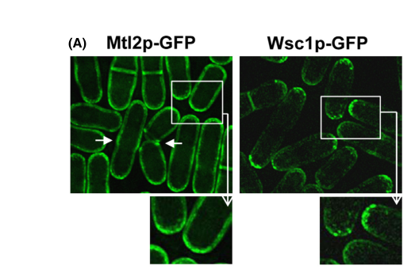

Wsc1 is a single-pass transmembrane mechanosensor in fission yeast that detects mechanical stress at the cell surface and coordinates cell wall repair with polar growth. Its extracellular WSC domain binds cell wall polysaccharides and forms force-dependent clusters at sites of wall compression. Clustering reduces lateral diffusion and is autonomous, independent of polarity machinery or downstream signaling. Through its cytoplasmic tail, Wsc1 recruits the Rho-GEF Rgf2p, which activates Rho1p to stimulate beta-1,3-glucan synthase for wall biosynthesis. Unlike S. cerevisiae Wsc1, the S. pombe Wsc1 signals independently of the MAPK cell integrity pathway. Wsc1 is concentrated at growing cell tips and is functionally redundant with Mtl2 for Rho1 activation, as wsc1-delta mtl2-delta double mutants are lethal.
| GO Term | Evidence | Action | Reason |
|---|---|---|---|
|
GO:1903338
regulation of cell wall organization or biogenesis
|
IBA
GO_REF:0000033 |
ACCEPT |
Summary: This phylogenetic inference is well-supported by direct experimental evidence in S. pombe. Wsc1 regulates cell wall organization through Rho1-mediated activation of glucan synthase, and wsc1-delta mutants show defective cell wall thickness homeostasis. The IBA annotation duplicates the experimentally supported EXP annotation but is independently correct.
|
|
GO:0016020
membrane
|
IEA
GO_REF:0000044 |
KEEP AS NON CORE |
Summary: This IEA annotation is correct but overly general. Wsc1 is a single-pass transmembrane protein localized to the plasma membrane. More specific localization terms (plasma membrane, plasma membrane of cell tip) are annotated with experimental evidence.
|
|
GO:0005886
plasma membrane
|
IDA
PMID:23907979 The fission yeast cell wall stress sensor-like proteins Mtl2... |
ACCEPT |
Summary: Well-supported by GFP-tagged Wsc1 localization in Cruz et al. 2013. Wsc1p-GFP was observed at the cell periphery concentrated at cell tips, confirming plasma membrane localization.
Supporting Evidence:
PMID:23907979
Wsc1p-GFP was concentrated in patches at the cell tips
|
|
GO:0005886
plasma membrane
|
IDA
PMID:34666001 Detection of surface forces by the cell-wall mechanosensor W... |
ACCEPT |
Summary: Neeli-Venkata et al. 2021 extensively studied Wsc1-GFP dynamics at the plasma membrane, demonstrating force-dependent clustering at the cell surface. Confirms plasma membrane localization with detailed biophysical characterization.
Supporting Evidence:
PMID:34666001
we uncovered the formation of micrometer-sized clusters at sites of force application onto the CW
|
|
GO:0031520
plasma membrane of cell tip
|
IDA
PMID:23907979 The fission yeast cell wall stress sensor-like proteins Mtl2... |
ACCEPT |
Summary: Cruz et al. 2013 showed Wsc1p-GFP concentrated in patches specifically at cell tips, which is the site of polarized growth in fission yeast. This specific localization is functionally significant because it positions the mechanosensor where wall expansion and remodeling are most active. The falcon deep research corroborates this and notes the review-level extension that Wsc1 also localizes to the division septum, consistent with a role in cytokinesis-associated wall remodeling; cell-tip patch localization remains the primary experimentally supported pattern.
Supporting Evidence:
PMID:23907979
Wsc1p-GFP was concentrated in patches at the cell tips
file:SCHPO/wsc1/wsc1-deep-research-falcon.md
Wsc1 localizes at active growth sites and the division septum
|
|
GO:0140897
mechanoreceptor activity
|
EXP
PMID:34666001 Detection of surface forces by the cell-wall mechanosensor W... |
ACCEPT |
Summary: This is the core molecular function annotation for Wsc1. Neeli-Venkata et al. 2021 provided direct biophysical evidence that Wsc1 detects mechanical forces by forming dose-dependent clusters at sites of cell wall compression, with disassembly upon relaxation. The WSC domain binds cell wall polysaccharides and reduces lateral diffusivity under stress, functioning as an autonomous mechanosensing module. The falcon deep research corroborates the mechanosensor framing, describing Wsc1 as a plasma membrane-associated, serine-rich cell wall mechanosensor at active growth sites that detects mechanical stress during growth and wall remodeling.
Supporting Evidence:
PMID:34666001
Clusters assembled within minutes of CW compression, in dose dependence with mechanical stress and disassembled upon relaxation
PMID:34666001
Wsc1 may represent an autonomous module to detect and transduce local surface forces onto the CW
file:SCHPO/wsc1/wsc1-deep-research-bioreason-sft.md
A single-pass plasma membrane receptor in fission yeast that uses an extracellular carbohydrate-binding module to sense mechanical strain at growth sites
file:SCHPO/wsc1/wsc1-deep-research-falcon.md
plasma membrane-associated, serine-rich cell wall “mechanosensor”**, localized at active growth sites and the division septum, proposed to detect mechanical stress associated with growth and wall remodeling
|
|
GO:0050982
detection of mechanical stimulus
|
EXP
PMID:34666001 Detection of surface forces by the cell-wall mechanosensor W... |
ACCEPT |
Summary: Well-supported by Neeli-Venkata et al. 2021 who demonstrated that Wsc1 detects mechanical forces applied to the cell wall. Wsc1 clusters form at sites of compression within minutes and scale with the magnitude of applied force. This is a core biological process directly linked to the mechanoreceptor molecular function.
Supporting Evidence:
PMID:34666001
Clusters assembled within minutes of CW compression, in dose dependence with mechanical stress and disassembled upon relaxation
|
|
GO:1903338
regulation of cell wall organization or biogenesis
|
EXP
PMID:29689193 Mechanosensation Dynamically Coordinates Polar Growth and Ce... |
ACCEPT |
Summary: Davi et al. 2018 demonstrated that mechanosensing through the CWI pathway mediates a feedback loop controlling cell wall thickness homeostasis. wsc1-delta mutants were defective in this thickness homeostasis and lysed by wall rupture. This establishes Wsc1 as essential for regulating cell wall assembly in coordination with growth. The falcon deep research independently places Wsc1 upstream of Rho1 activation, with wsc1-delta cells showing reduced Rho1-GTP under cell wall stress and Wsc1 overexpression activating cell wall biosynthesis.
Supporting Evidence:
PMID:29689193
This feedback was mediated by mechanosensing through the CW integrity pathway, which probes strain in the wall to adjust synthase localization and activity to surface growth
PMID:29689193
Mutants defective in thickness homeostasis lysed by rupturing the wall
file:SCHPO/wsc1/wsc1-deep-research-falcon.md
Wsc1 acts upstream of Rho1
|
|
GO:0005886
plasma membrane
|
IDA
PMID:21832151 Endocytosis is essential for dynamic translocation of a synt... |
ACCEPT |
Summary: Kashiwazaki et al. 2011 is a study of syntaxin Psy1 relocalization during meiosis. Wsc1 (SPBC30B4.01c) appears in Table 3 as one of many plasma membrane proteins surveyed for localization during meiosis. Wsc1 was confirmed at the plasma membrane during vegetative growth using GFP-tagging. This is secondary data confirming PM localization.
Supporting Evidence:
PMID:21832151
SPBC30B4.01cwsc1+Transmembrane receptor1PMZK373
|
|
GO:0007166
cell surface receptor signaling pathway
|
IC
GO_REF:0000111 |
ACCEPT |
Summary: This IC annotation infers involvement in cell surface receptor signaling pathway based on sequence similarity evidence for signal transduction receptor activity (GO:0004888). The inference is reasonable given that Wsc1 is a transmembrane receptor that signals through Rgf2/Rho1 to activate glucan synthase. However, the specific downstream pathway in S. pombe differs from the canonical CWI MAPK pathway seen in S. cerevisiae. The falcon deep research independently confirms the Wsc1 -> Rgf2 -> Rho1 axis and emphasizes that Pmk1/CIP MAPK activation persists in wsc1-delta, so this cell-surface receptor signaling is Rho1-directed rather than an essential upstream trigger of the Pmk1 cascade.
Supporting Evidence:
PMID:23907979
signaling from Wsc1p and Rgf2p through Rho1p to activate glucan synthase (GS)
file:SCHPO/wsc1/wsc1-deep-research-falcon.md
Wsc1 **interacts with the Rho-GEF Rgf2**, and **Wsc1 overexpression activates cell wall biosynthesis**, consistent with a Wsc1 → Rgf2 → Rho1 axis
file:SCHPO/wsc1/wsc1-deep-research-falcon.md
Pmk1 phosphorylation/activation is not markedly affected
|
|
GO:0035556
intracellular signal transduction
|
ISO
GO_REF:0000024 |
KEEP AS NON CORE |
Summary: This ISO annotation transfers from S. cerevisiae Slg1/Wsc1 (SGD:S000005534). While S. pombe Wsc1 does participate in intracellular signal transduction through the Rgf2->Rho1->GS pathway, this term is quite broad. The specific signaling mechanism in S. pombe differs from S. cerevisiae (no MAPK pathway involvement). Acceptable as a general annotation. The falcon deep research reinforces that the S. pombe sensor-to-MAPK wiring differs from budding yeast, with Wsc1 acting upstream of Rho1 while Pmk1/CIP activation persists independently in its absence.
Supporting Evidence:
PMID:23907979
signaling from Wsc1p and Rgf2p through Rho1p to activate glucan synthase (GS)
file:SCHPO/wsc1/wsc1-deep-research-falcon.md
Wsc1 acts upstream of Rho1
|
Q: Does the phosphorylation at Ser-354 in the Wsc1 cytoplasmic tail regulate its interaction with Rgf2 or its signaling output?
Suggested experts: Yolanda Sanchez, Nicolas Minc
Q: What is the relationship between Wsc1 clustering dynamics and Rho1 activation kinetics at growing tips?
Suggested experts: Nicolas Minc, Ramakanth Neeli-Venkata
Q: Does Wsc1 have additional downstream effectors beyond the Rgf2-Rho1-glucan synthase pathway, particularly under specific stress conditions?
Suggested experts: Yolanda Sanchez, Patricia Garcia
Experiment: FRAP and single-molecule tracking of Wsc1-GFP in rgf2-delta and rho1 temperature-sensitive mutants to determine if downstream signaling feeds back on Wsc1 clustering dynamics
Type: live-cell imaging
Experiment: Phosphomimetic (S354D) and phospho-dead (S354A) mutations in Wsc1 to test whether cytoplasmic tail phosphorylation affects Rgf2 interaction or glucan synthase activation
Type: site-directed mutagenesis and biochemistry
Experiment: Co-immunoprecipitation or proximity labeling (BioID) of Wsc1 cytoplasmic tail to identify additional interacting partners beyond Rgf2
Type: proteomics
I begin with the InterPro architecture. Two overlapping carbohydrate-binding signatures, IPR002889 (Carbohydrate-binding WSC domain, residues 31–119 and 36–109), occupy the N-terminal region, and these are embedded within a broader family assignment, IPR051836 (Kremen receptor family, residues 36–273). The WSC domain is a cysteine-rich, extracellular module that binds cell wall polysaccharides and senses mechanical strain transmitted through the cell wall–plasma membrane interface. Its placement at the N-terminus implies a luminal/extracellular position, consistent with a single-pass type I topology in which the N-terminus is outside and the C-terminus is cytosolic. The Kremen receptor family signature further supports a receptor-like scaffold that couples an extracellular ligand/mechanosensor module to intracellular signaling. This domain order—extracellular WSC followed by a transmembrane segment and a cytosolic tail—causally establishes a transmembrane signaling receptor that detects extracellular cues and transduces them across the membrane.
From this architecture, the molecular function resolves to GO:0004888 transmembrane signaling receptor activity. The WSC domain’s affinity for carbohydrate matrices and its known role in strain sensing explains how the receptor detects mechanical perturbations at the cell surface. Mechanical deformation of the cell wall–membrane interface would be captured by the WSC domain, triggering conformational changes that propagate through the single-pass helix to the cytosolic tail.
This receptor activity drives a cell surface receptor signaling pathway (GO:0007166). In fission yeast, cell wall integrity signaling is executed by a Rho1-centered cascade that culminates in a MAP kinase. The presence of interaction partners Rho1 guanine nucleotide exchange factor 1 and 2, GTP-binding protein Rho1, Protein kinase C-like 2, and MAP kinase kinase skh1/pek1 maps precisely onto the canonical cell wall integrity (CWI) module: the receptor activates Rho1 via its GEFs, Rho1 engages Protein kinase C-like 2, and PKC-like 2 activates the MAPKK Skh1/Pek1, which then phosphorylates downstream effectors. This chain of activation explains how the receptor’s extracellular sensing causes intracellular kinase signaling. Because the WSC domain detects strain, the process-level consequence is detection of mechanical stimulus (GO:0050982), which is converted into kinase signaling that remodels the cell wall and stabilizes the cortex. Sustained CWI signaling also buffers stress-induced apoptosis-like and necrotic pathways; thus, by maintaining wall integrity and kinase activity, the receptor contributes to negative regulation of necrotic cell death (GO:0060547).
The cellular component follows from the topology and the role in polarized growth. A single-pass type I receptor with an extracellular WSC domain must be an integral membrane protein, and in fission yeast, CWI signaling is concentrated at growth sites. Therefore, the protein resides at the plasma membrane of the cell tip (GO:0031520), where polarized exocytosis and wall synthesis occur, and it is an integral component of membrane (GO:0016021). The tip localization ensures that mechanical cues specific to elongation and septation are sensed where wall remodeling is most active.
Mechanistically, the extracellular WSC domain binds cell wall carbohydrates and experiences force under wall stress or growth-driven tension. This mechanical load stabilizes receptor dimerization/oligomerization, which promotes recruitment or activation of Rho1 GEFs at the cytosolic tail, switching Rho1 to its GTP-bound state. Activated Rho1 engages Protein kinase C-like 2, which in turn activates the MAPKK Skh1/Pek1, driving downstream transcriptional and enzymatic programs that reinforce the wall and maintain ion/osmotic balance. Through this signaling, the receptor prevents catastrophic wall rupture and dampens necrotic death pathways. The observed partners—Rho1 GEFs, Rho1, Protein kinase C-like 2, and Skh1/Pek1—fit this mechanism as direct or proximal transducers, while the uncharacterized aminotransferase C6B12.04c may modulate local metabolite pools that influence cell wall biosynthesis or stress responses at the tip.
## Functional Summary
A single-pass plasma membrane receptor in fission yeast that uses an extracellular carbohydrate-binding module to sense mechanical strain at growth sites and transmit this information across the membrane to a Rho1-centered kinase cascade. By activating a protein kinase C–MAP kinase pathway, it maintains cell wall integrity, supports polarized growth at the cell tip, and restrains stress-induced necrotic death.
## UniProt Summary
Cell membrane receptor that activates a cell wall integrity (CWI) signaling pathway involving the PKC1/PEK1/PEK2 and RHO1 proteins. Required for cell wall integrity and cell growth. May be involved in the control of apoptosis.
## InterPro Domains
- IPR002889: Carbohydrate-binding WSC (domain) [31-119]
- IPR002889: Carbohydrate-binding WSC (domain) [36-109]
- IPR051836: Kremen receptor (family) [36-273]
## GO Term Predictions
### Molecular Function
### Biological Process
### Cellular Component
The research report should be a detailed narrative explaining the function, biological processes, and localization of the gene product. Citations should be given for all claims.
You should prioritize authoritative reviews and primary scientific literature when conducting research. You can supplement
this with annotations you find in gene/protein databases, but these can be outdated or inaccurate.
We are specifically interested in the primary function of the gene - for enzymes, what reaction is catalyzed, and what is the substrate specificity? For transporters, what is the substrate? For structural proteins or adapters, what is the broader structural role? For signaling molecules, what is the role in the pathway.
We are interested in where in or outside the cell the gene product carries out its function.
We are also interested in the signaling or biochemical pathways in which the gene functions. We are less interested in broad pleiotropic effects, except where these elucidate the precise role.
Include evidence where possible. We are interested in both experimental evidence as well as inference from structure, evolution, or bioinformatic analysis. Precise studies should be prioritized over high-throughput, where available.
The gene symbol wsc1 is used in multiple fungi (e.g., Saccharomyces cerevisiae Wsc1), but the evidence summarized here is restricted to fission yeast (Schizosaccharomyces pombe) Wsc1 consistent with the UniProt target description (“cell wall integrity and stress response component 1; precursor”) and with primary S. pombe experimentation explicitly on SpWsc1p. (cruz2013thefissionyeast pages 1-2, cansado2021thefissionyeast pages 2-3)
In S. pombe, Wsc1 is a plasma-membrane/cell-surface, cell wall stress sensor-like protein implicated in maintaining cell wall integrity under stress by coupling extracellular wall status to intracellular signaling. Primary work characterizes Wsc1 (together with Mtl2) as having “structural features indicative of plasma membrane-associated cell wall sensors” and shows it functions by activating the GTPase Rho1. (cruz2013thefissionyeast pages 1-2)
A later fission-yeast review describes Wsc1 more specifically as a plasma membrane-associated, serine-rich cell wall “mechanosensor”, localized at active growth sites and the division septum, proposed to detect mechanical stress associated with growth and wall remodeling. (cansado2021thefissionyeast pages 3-5)
Direct topology/domain mapping for S. pombe Wsc1 is not provided in the S. pombe primary evidence excerpted here; however, Wsc-type fungal sensors are widely described as single-pass membrane proteins with an N-terminal extracellular cysteine-rich/WSC domain, an extracellular Ser/Thr-rich region, a transmembrane helix, and a cytoplasmic tail that couples to downstream signaling. This architecture is detailed in fungal Wsc-family reviews and structural work (performed in S. cerevisiae), and is consistent with the UniProt-reported WSC-related domains for P87179. (schoppner2022structureofthe pages 1-2, yoshimi2022cellwallintegrity pages 2-4)
The strongest S. pombe-specific functional conclusion is that Wsc1 acts upstream of Rho1 during cell-wall stress responses.
A key nuance in S. pombe is that Wsc1’s major demonstrated role is not to serve as an essential upstream activator of the Pmk1 MAPK module.
Cruz et al. report that Pmk1 phosphorylation/activation is not markedly affected by deletion of wsc1 (or mtl2) under multiple stress conditions; thus, Pmk1 signaling can remain active during cell-wall stress even when Wsc1/Mtl2 are absent. (cruz2013thefissionyeast pages 11-13)
The fission-yeast CIP review similarly notes that although Wsc1/Mtl2 contribute to maintaining physiological Rho1-GTP levels under stress, CIP/Pmk1 activity is not markedly reduced in their absence, supporting partially MAPK-independent roles for these sensors. (cansado2021thefissionyeast pages 2-3)
Primary microscopy shows Wsc1p-GFP concentrated in patches at the cell tips, consistent with polarized growth-zone localization at the cortex/plasma membrane. (cruz2013thefissionyeast pages 1-2)
The fission-yeast review expands the localization description: Wsc1 localizes at active growth sites and the division septum, aligning with a role in sensing wall stress during tip growth and cytokinesis-associated wall remodeling. (cansado2021thefissionyeast pages 2-3, cansado2021thefissionyeast pages 3-5)
The Wsc1p-GFP cell-tip patch localization is supported by a cropped figure panel from the primary paper. (cruz2013thefissionyeast media f77ee088)
Stress-response spot assays (including caspofungin-related assays in the main figures) are also available as cropped figure evidence from the same study. (cruz2013thefissionyeast media 95773a2e, cruz2013thefissionyeast media 958fd2d6)
Cruz et al. conclude that Wsc1 and Mtl2 contribute to stress adaptation with partial redundancy: wsc1Δ alone shows a mild phenotype under the tested conditions, whereas mtl2Δ is more stress-sensitive, and the double deletion is lethal unless Rho1/GEFs are overexpressed. (cruz2013thefissionyeast pages 1-2, cruz2013thefissionyeast pages 11-13)
The study’s stress phenotyping includes spot assays on YES plates with defined stressor concentrations; the excerpt provides the following explicit conditions: caffeine 15 mmol/L, sodium orthovanadate 1.7 mmol/L, SDS 0.015%, H2O2 0.8 mmol/L, and NaCl 100 mmol/L, with colonies scored after 3 days at 28°C. (cruz2013thefissionyeast pages 17-17)
Within the retrieved full-text evidence set, no 2023–2024 primary studies were found that provide new S. pombe-specific experimental findings about Wsc1 (P87179) beyond the established mechanistic framework (Wsc1/Mtl2 → Rho1 activation; partial independence from Pmk1 activation). This should be interpreted as a limitation of the currently retrieved corpus rather than definitive absence of recent work.
However, research developments in adjacent fungal systems strengthen mechanistic interpretation of Wsc-type sensors:
Across fungi, the cell wall is widely framed as an attractive antifungal target because humans lack a cell wall; this motivates targeting wall biosynthesis enzymes and wall-integrity signaling. (levin2005cellwallintegrity pages 1-2)
In filamentous fungi and pathogenic yeasts, applied work and reviews describe:
* Clinically used echinocandins (caspofungin, micafungin, anidulafungin) that inhibit β-1,3-glucan synthase (FKS1/FKS2), with mention of resistance mechanisms (e.g., Fks1-associated resistance). Publication date: Apr 2022. URL: https://doi.org/10.3390/jof8050435 (yoshimi2022cellwallintegrity pages 11-12)
* Screening/assay reagents used to probe cell wall integrity, such as cell-wall-binding dyes Calcofluor white (CFW) and Congo red (CR), and enzymatic perturbation using zymolyase, which can activate CWI MAPK pathways and is used experimentally to trigger/measure responses. (yoshimi2022cellwallintegrity pages 11-12, yoshimi2022cellwallintegrity pages 20-21)
Although these application examples are not specific to S. pombe Wsc1, they show how cell-wall stress sensors and their downstream Rho/PKC/MAPK modules are exploited in antifungal discovery and mechanistic screening, and they contextualize why Wsc1-like sensors are of interest.
The fission-yeast CIP review describes a concrete selection/screening paradigm tied to CIP activity: mutants “viable in the presence of immunosuppressant and chloride ion” (vic phenotype) were used to identify CIP components; pharmacological inhibition of calcineurin uses FK506, and absence of Pmk1 activity can suppress chloride sensitivity under calcineurin inhibition. This provides a practical implementation in S. pombe for mapping stress-response signaling genetically. (cansado2021thefissionyeast pages 2-3)
Fission-yeast CIP experts (Cansado et al., Dec 2021/Jan 2022, J. Fungi; https://doi.org/10.3390/jof8010032) describe Wsc1 as a mechanosensing module that can form stable clusters acting as signaling platforms at sites of mechanical stress, feeding into Rho1-centered control of cell wall homeostasis and interfacing with broader signaling (e.g., TOR/SAPK cross-talk at the pathway level). (cansado2021thefissionyeast pages 3-5)
Primary experimental authors (Cruz et al., Jul 2013, MicrobiologyOpen; https://doi.org/10.1002/mbo3.113) provide the core mechanistic conclusion that Wsc1 (with Mtl2) activates Rho1 and that Pmk1 activation persists in wsc1Δ/mtl2Δ under stress, implying that the fission-yeast sensor-to-MAPK wiring differs from the classic budding-yeast CWI sensor architecture. (cruz2013thefissionyeast pages 1-2, cruz2013thefissionyeast pages 11-13)
In Schizosaccharomyces pombe, Wsc1 (UniProt P87179) is experimentally supported as a plasma-membrane/cell wall stress sensor-like protein that helps maintain cell-wall integrity by activating the GTPase Rho1 rather than acting as a primary upstream activator of the canonical Pmk1 MAPK cascade; a later fission-yeast review further interprets Wsc1 as a mechanosensor that can cluster at sites of mechanical stress (Cruz et al., 2013, https://doi.org/10.1002/mbo3.113; Cansado et al., 2021, https://doi.org/10.3390/jof8010032) (cruz2013thefissionyeast pages 1-2, cansado2021thefissionyeast pages 2-3, cansado2021thefissionyeast pages 3-5).
The key primary localization result is that Wsc1p-GFP concentrates in patches at cell tips, consistent with a polarized cell-surface sensor; review synthesis extends this localization to active growth sites and the division septum (2013, https://doi.org/10.1002/mbo3.113; 2021, https://doi.org/10.3390/jof8010032) (cruz2013thefissionyeast pages 1-2, cansado2021thefissionyeast pages 2-3).
Genetically and biochemically, Wsc1 functions with the Rho1 pathway: Wsc1 interacts with the Rho-GEF Rgf2, overexpression of wsc1+ activates cell-wall biosynthesis and causes abnormal wall accumulation/growth defects, and wsc1Δ cells show reduced Rho1-GTP under cell-wall stress (2013, https://doi.org/10.1002/mbo3.113) (cruz2013thefissionyeast pages 1-2, cruz2013thefissionyeast pages 11-13).
Wsc1 is partially redundant with Mtl2: either single deletion is viable, but simultaneous loss of wsc1 and mtl2 is lethal, and this lethality is rescued by overexpression of Rho1 or its GEFs, placing both sensors upstream of Rho1 activation (2013, https://doi.org/10.1002/mbo3.113; 2021, https://doi.org/10.3390/jof8010032) (cruz2013thefissionyeast pages 1-2, cansado2021thefissionyeast pages 2-3).
Importantly, Pmk1/CIP signaling remains active in wsc1Δ and mtl2Δ cells during cell-wall stress, so Wsc1 is best understood as a Rho1-linked cell-wall stress sensor/mechanosensory module whose major experimentally demonstrated role is to promote Rho1-dependent wall biosynthesis, largely independently of being an essential trigger for Pmk1 activation (2013, https://doi.org/10.1002/mbo3.113; 2021, https://doi.org/10.3390/jof8010032) (cruz2013thefissionyeast pages 11-13, cansado2021thefissionyeast pages 2-3).
Blockquote: This blockquote summarizes the strongest experimentally supported conclusions about S. pombe Wsc1, focusing on localization, pathway placement, redundancy, and mechanistic interpretation. It is useful as a compact evidence-backed annotation statement for the gene/protein.
A structured evidence table is provided below for quick curation.
| Evidence type | Key finding | Experimental system/condition | Quantitative details (concentrations, conditions) | Source (first author year) | DOI/URL | Citation ID |
|---|---|---|---|---|---|---|
| domain/topology | Identity verified for the target protein: S. pombe Wsc1 is described as a plasma-membrane-associated, serine-rich cell wall mechanosensor/sensor-like protein. Wsc-type sensors are characterized by an extracellular WSC/cysteine-rich domain, a long Ser/Thr-rich extracellular region, a single transmembrane segment, and a cytoplasmic tail; this architecture is consistent with the UniProt domain annotation for P87179, although the detailed domain structure is inferred from fungal Wsc-family literature rather than shown directly for S. pombe in the cited primary paper. | Review synthesis for S. pombe Wsc1; comparative structural review for fungal Wsc sensors | No direct quantitative measurement given in the cited snippets for S. pombe topology | Cansado 2021; Schöppner 2022 | https://doi.org/10.3390/jof8010032 ; https://doi.org/10.3390/jof8040379 | (cansado2021thefissionyeast pages 3-5, schoppner2022structureofthe pages 1-2) |
| localization | Wsc1 localizes to active growth sites and the division septum in S. pombe; primary localization study found Wsc1p-GFP concentrated in patches at the cell tips, supporting a polarized cell-surface sensor role. | Wsc1p-GFP localization microscopy in fission yeast | Cell-tip patch localization; review additionally places Wsc1 at growth sites and septum | Cruz 2013; Cansado 2021 | https://doi.org/10.1002/mbo3.113 ; https://doi.org/10.3390/jof8010032 | (cruz2013thefissionyeast pages 1-2, cansado2021thefissionyeast pages 2-3) |
| localization | Wsc1 cortical/cell-surface localization is not altered by microtubule depolymerization, indicating stable cortical association rather than microtubule-dependent delivery in that assay. | Fluorescence microscopy after microtubule depolymerization | Qualitative result only; no numeric values provided in snippet | Cruz 2013 | https://doi.org/10.1002/mbo3.113 | (cruz2013thefissionyeast pages 17-17) |
| genetic interaction | wsc1Δ and mtl2Δ single mutants are viable, but the double deletion is lethal; lethality is rescued by overexpression of Rho1 or its GEFs, indicating Wsc1/Mtl2 act upstream of Rho1. | Single and double deletion genetics; suppression by overexpression | Double-mutant lethality; rescue by Rho1 or Rho1-GEF overexpression | Cruz 2013; Cansado 2021 | https://doi.org/10.1002/mbo3.113 ; https://doi.org/10.3390/jof8010032 | (cruz2013thefissionyeast pages 1-2, cansado2021thefissionyeast pages 2-3) |
| genetic interaction | Wsc1 interacts with the Rho-GEF Rgf2p, linking the sensor to a specific upstream activator of Rho1. | Interaction/functional analysis in S. pombe | Qualitative interaction reported; no affinity/stoichiometry in snippet | Cruz 2013 | https://doi.org/10.1002/mbo3.113 | (cruz2013thefissionyeast pages 1-2) |
| pathway placement | Wsc1 and Mtl2 turn on the GTPase Rho1p and are required to maintain physiological Rho1-GTP levels during cell-wall stress. | Stress-response signaling assays in deletion strains | In wsc1Δ and mtl2Δ, Rho1p-GTP is reduced under cell-wall stress (qualitative in snippet) | Cruz 2013; Cansado 2021 | https://doi.org/10.1002/mbo3.113 ; https://doi.org/10.3390/jof8010032 | (cruz2013thefissionyeast pages 1-2, cansado2021thefissionyeast pages 2-3) |
| pathway placement | Wsc1 signaling is consistent with a branch that acts through Rgf2 → Rho1 to stimulate glucan synthase / cell wall biosynthesis, rather than serving as a main upstream activator of the canonical Pmk1/CIP MAPK cascade. | Overexpression, genetic interaction, and pathway assays | Overexpression activates cell-wall biosynthesis; no kinetic constants reported | Cruz 2013 | https://doi.org/10.1002/mbo3.113 | (cruz2013thefissionyeast pages 1-2, cruz2013thefissionyeast pages 11-13) |
| pathway placement | In S. pombe, Pmk1/CIP activity remains active in wsc1Δ and mtl2Δ under cell-wall stress, indicating Wsc1 is not an essential authentic upstream component of the canonical CIP/Pmk1 MAPK module. | Pmk1 phosphorylation/activation assays after multiple stresses in mutant backgrounds | Snippet states Pmk1 phosphorylation was not markedly affected; no fold-change values provided | Cruz 2013; Cansado 2021 | https://doi.org/10.1002/mbo3.113 ; https://doi.org/10.3390/jof8010032 | (cruz2013thefissionyeast pages 11-13, cansado2021thefissionyeast pages 2-3) |
| phenotype/assay | Overproduction of wsc1+ causes abnormal accumulation of cell-wall material, cell growth arrest, and morphological abnormalities, consistent with a positive role in cell-wall biosynthesis signaling. | wsc1+ overexpression in S. pombe | Qualitative phenotype; figure referenced for glucan incorporation/cell-wall accumulation, but no numeric values in snippet | Cruz 2013 | https://doi.org/10.1002/mbo3.113 | (cruz2013thefissionyeast pages 11-13) |
| phenotype/assay | wsc1Δ displays only a very mild phenotype under tested conditions, whereas mtl2Δ is more stress-sensitive; this supports partial redundancy between Wsc1 and Mtl2. | Deletion mutants under stress assays | Qualitative “very mild vic phenotype” for wsc1Δ in snippet | Cruz 2013 | https://doi.org/10.1002/mbo3.113 | (cruz2013thefissionyeast pages 11-13) |
| phenotype/assay | Spot assays included cell-wall and stress agents; the study reports testing with caffeine, sodium orthovanadate, SDS, H2O2, and NaCl, providing an assay framework for Wsc1-related stress phenotyping. | YES plate spot assays with mutant strains | 15 mmol/L caffeine; 1.7 mmol/L sodium orthovanadate; 0.015% SDS; 0.8 mmol/L H2O2; 100 mmol/L NaCl; colonies scored after 3 days at 28°C | Cruz 2013 | https://doi.org/10.1002/mbo3.113 | (cruz2013thefissionyeast pages 17-17) |
| applications | Because fungal cell wall integrity signaling controls adaptation to wall damage and the fungal cell wall is absent in humans, the Wsc/CWI axis is considered relevant to antifungal strategy development; reviews explicitly frame the cell wall/CWI system as an antifungal target area. | Review/translation context across fungi; not a direct Wsc1 intervention study in S. pombe | No S. pombe-specific application metric given in snippet | Cansado 2021; Levin 2005; Yoshimi 2022 | https://doi.org/10.3390/jof8010032 ; https://doi.org/10.1128/mmbr.69.2.262-291.2005 ; https://doi.org/10.3390/jof8050435 | (cansado2021thefissionyeast pages 2-3, levin2005cellwallintegrity pages 1-1, yoshimi2022cellwallintegrity pages 2-4) |
| applications | Wsc-family sensors in fungi are linked to sensitivity/resistance to cell-wall-targeting agents (e.g., caspofungin, Congo red, Calcofluor white) in other yeasts/fungi, supporting Wsc-type sensors as informative mechanistic nodes for antifungal screens and cell-wall engineering, though this evidence is not S. pombe-specific. | Comparative fungal structural/industrial reviews | Agents named in snippets: caspofungin, Congo red, Calcofluor white | Schöppner 2022; Yoshimi 2022 | https://doi.org/10.3390/jof8040379 ; https://doi.org/10.3390/jof8050435 | (schoppner2022structureofthe pages 1-2, yoshimi2022cellwallintegrity pages 2-4) |
Table: This table summarizes experimentally supported and review-supported functional annotation evidence for Schizosaccharomyces pombe Wsc1 (UniProt P87179), covering identity, localization, genetic interactions, pathway placement, phenotypes, and translational relevance. It is useful for distinguishing direct S. pombe evidence from broader fungal Wsc-family inferences.
References
(cruz2013thefissionyeast pages 1-2): Sandra Cruz, Sofía Muñoz, Elvira Manjón, Patricia García, and Yolanda Sanchez. The fission yeast cell wall stress sensor-like proteins mtl2 and wsc1 act by turning on the gtpase rho1p but act independently of the cell wall integrity pathway. MicrobiologyOpen, 2:778-794, Jul 2013. URL: https://doi.org/10.1002/mbo3.113, doi:10.1002/mbo3.113. This article has 55 citations and is from a peer-reviewed journal.
(cansado2021thefissionyeast pages 2-3): José Cansado, Teresa Soto, Alejandro Franco, Jero Vicente-Soler, and Marisa Madrid. The fission yeast cell integrity pathway: a functional hub for cell survival upon stress and beyond. Journal of Fungi, 8:32, Dec 2021. URL: https://doi.org/10.3390/jof8010032, doi:10.3390/jof8010032. This article has 39 citations.
(cansado2021thefissionyeast pages 3-5): José Cansado, Teresa Soto, Alejandro Franco, Jero Vicente-Soler, and Marisa Madrid. The fission yeast cell integrity pathway: a functional hub for cell survival upon stress and beyond. Journal of Fungi, 8:32, Dec 2021. URL: https://doi.org/10.3390/jof8010032, doi:10.3390/jof8010032. This article has 39 citations.
(schoppner2022structureofthe pages 1-2): Philipp Schöppner, Anne Pia Lutz, Bernard Johannes Lutterbach, Stefan Brückner, Lars-Oliver Essen, and Hans-Ulrich Mösch. Structure of the yeast cell wall integrity sensor wsc1 reveals an essential role of surface-exposed aromatic clusters. Journal of Fungi, 8:379, Apr 2022. URL: https://doi.org/10.3390/jof8040379, doi:10.3390/jof8040379. This article has 18 citations.
(yoshimi2022cellwallintegrity pages 2-4): Akira Yoshimi, Ken Miyazawa, Moriyuki Kawauchi, and Keietsu Abe. Cell wall integrity and its industrial applications in filamentous fungi. Journal of Fungi, 8:435, Apr 2022. URL: https://doi.org/10.3390/jof8050435, doi:10.3390/jof8050435. This article has 45 citations.
(cruz2013thefissionyeast pages 11-13): Sandra Cruz, Sofía Muñoz, Elvira Manjón, Patricia García, and Yolanda Sanchez. The fission yeast cell wall stress sensor-like proteins mtl2 and wsc1 act by turning on the gtpase rho1p but act independently of the cell wall integrity pathway. MicrobiologyOpen, 2:778-794, Jul 2013. URL: https://doi.org/10.1002/mbo3.113, doi:10.1002/mbo3.113. This article has 55 citations and is from a peer-reviewed journal.
(cruz2013thefissionyeast media f77ee088): Sandra Cruz, Sofía Muñoz, Elvira Manjón, Patricia García, and Yolanda Sanchez. The fission yeast cell wall stress sensor-like proteins mtl2 and wsc1 act by turning on the gtpase rho1p but act independently of the cell wall integrity pathway. MicrobiologyOpen, 2:778-794, Jul 2013. URL: https://doi.org/10.1002/mbo3.113, doi:10.1002/mbo3.113. This article has 55 citations and is from a peer-reviewed journal.
(cruz2013thefissionyeast media 95773a2e): Sandra Cruz, Sofía Muñoz, Elvira Manjón, Patricia García, and Yolanda Sanchez. The fission yeast cell wall stress sensor-like proteins mtl2 and wsc1 act by turning on the gtpase rho1p but act independently of the cell wall integrity pathway. MicrobiologyOpen, 2:778-794, Jul 2013. URL: https://doi.org/10.1002/mbo3.113, doi:10.1002/mbo3.113. This article has 55 citations and is from a peer-reviewed journal.
(cruz2013thefissionyeast media 958fd2d6): Sandra Cruz, Sofía Muñoz, Elvira Manjón, Patricia García, and Yolanda Sanchez. The fission yeast cell wall stress sensor-like proteins mtl2 and wsc1 act by turning on the gtpase rho1p but act independently of the cell wall integrity pathway. MicrobiologyOpen, 2:778-794, Jul 2013. URL: https://doi.org/10.1002/mbo3.113, doi:10.1002/mbo3.113. This article has 55 citations and is from a peer-reviewed journal.
(cruz2013thefissionyeast pages 17-17): Sandra Cruz, Sofía Muñoz, Elvira Manjón, Patricia García, and Yolanda Sanchez. The fission yeast cell wall stress sensor-like proteins mtl2 and wsc1 act by turning on the gtpase rho1p but act independently of the cell wall integrity pathway. MicrobiologyOpen, 2:778-794, Jul 2013. URL: https://doi.org/10.1002/mbo3.113, doi:10.1002/mbo3.113. This article has 55 citations and is from a peer-reviewed journal.
(levin2005cellwallintegrity pages 1-2): David E. Levin. Cell wall integrity signaling in saccharomyces cerevisiae. Microbiology and Molecular Biology Reviews, 69:262-291, Jun 2005. URL: https://doi.org/10.1128/mmbr.69.2.262-291.2005, doi:10.1128/mmbr.69.2.262-291.2005. This article has 1470 citations and is from a domain leading peer-reviewed journal.
(yoshimi2022cellwallintegrity pages 11-12): Akira Yoshimi, Ken Miyazawa, Moriyuki Kawauchi, and Keietsu Abe. Cell wall integrity and its industrial applications in filamentous fungi. Journal of Fungi, 8:435, Apr 2022. URL: https://doi.org/10.3390/jof8050435, doi:10.3390/jof8050435. This article has 45 citations.
(yoshimi2022cellwallintegrity pages 20-21): Akira Yoshimi, Ken Miyazawa, Moriyuki Kawauchi, and Keietsu Abe. Cell wall integrity and its industrial applications in filamentous fungi. Journal of Fungi, 8:435, Apr 2022. URL: https://doi.org/10.3390/jof8050435, doi:10.3390/jof8050435. This article has 45 citations.
(levin2005cellwallintegrity pages 1-1): David E. Levin. Cell wall integrity signaling in saccharomyces cerevisiae. Microbiology and Molecular Biology Reviews, 69:262-291, Jun 2005. URL: https://doi.org/10.1128/mmbr.69.2.262-291.2005, doi:10.1128/mmbr.69.2.262-291.2005. This article has 1470 citations and is from a domain leading peer-reviewed journal.

"The fission yeast cell wall stress sensor-like proteins Mtl2 and Wsc1 act by turning on the GTPase Rho1p but act independently of the cell wall integrity pathway."
Key findings for Wsc1:
1. Wsc1p-GFP localizes to patches at cell tips PMID:23907979
2. Wsc1p interacts with Rho-GEF Rgf2p PMID:23907979
3. Overexpression activates cell wall biosynthesis PMID:23907979
4. Single deletion (wsc1-delta) is viable but double deletion with mtl2 is lethal PMID:23907979
5. Rescued by overexpression of Rho1 or its GEFs PMID:23907979
6. wsc1-delta shows low Rho1p-GTP under cell wall stress PMID:23907979
7. Two separate signaling branches: Wsc1->Rgf2->Rho1->glucan synthase (GS); Mtl2->Rho1->Pck1 PMID:23907979
8. CRITICAL: MAPK Pmk1p pathway remains active in wsc1-delta, meaning Wsc1 acts INDEPENDENTLY of the canonical CWI MAPK pathway PMID:23907979
"Detection of surface forces by the cell-wall mechanosensor Wsc1 in yeast."
Key findings:
1. Wsc1 forms micrometer-sized clusters at sites of force application on cell wall PMID:34666001
2. Clusters assemble within minutes of CW compression in dose-dependence with mechanical stress PMID:34666001
3. Clusters disassemble upon relaxation PMID:34666001
4. Clustering mechanism: reduced lateral diffusivity via WSC domain binding to CW polysaccharides PMID:34666001
5. Clustering is independent of canonical polarity, trafficking, and downstream CW regulatory pathways PMID:34666001
6. Wsc1 functions as an autonomous mechanosensing module PMID:34666001
"Mechanosensation Dynamically Coordinates Polar Growth and Cell Wall Assembly to Promote Cell Survival."
Key findings:
1. CW thickness at growing tips fluctuates with homeostatic feedback PMID:29689193
2. This feedback is mediated by mechanosensing through the CWI pathway PMID:29689193
3. wsc1-delta mutants defective in thickness homeostasis lyse by wall rupture PMID:29689193
"Endocytosis is essential for dynamic translocation of a syntaxin 1 orthologue during fission yeast meiosis."
This is not a Wsc1-focused paper. Wsc1 (SPBC30B4.01c) appears in Table 3 as one of many PM proteins surveyed for their localization during meiosis. The paper confirmed Wsc1 plasma membrane localization during vegetative growth via GFP-tagging.
"Protein O-mannosylation is crucial for cell wall integrity, septation and viability in fission yeast."
This paper first describes SpWsc1p as an O-mannosylated protein, supporting the structural model that O-mannosylation of the Ser/Thr-rich region contributes to the rod-like rigidity of the ectodomain.
"Phosphoproteome analysis of fission yeast."
Large-scale phosphoproteome study; identifies phosphoserine at Ser-354 in the cytoplasmic tail of Wsc1. This is potentially important for signal transduction.
Based on all literature, the Wsc1 signaling pathway in S. pombe:
IMPORTANT: Unlike S. cerevisiae Wsc1, S. pombe Wsc1 acts INDEPENDENTLY of the MAPK (Pmk1) cell wall integrity pathway. The BioReason model incorrectly describes signaling through "PKC-like 2 -> MAPKK Skh1/Pek1" as part of the Wsc1 pathway. This is the Mtl2 branch or the general CWI MAPK pathway, not the Wsc1-specific branch.
Source: wsc1-deep-research-bioreason-sft.md
The BioReason functional summary describes Wsc1 as:
A single-pass plasma membrane receptor in fission yeast that uses an extracellular carbohydrate-binding module to sense mechanical strain at growth sites and transmit this information across the membrane to a Rho1-centered kinase cascade. By activating a protein kinase C-MAP kinase pathway, it maintains cell wall integrity, supports polarized growth at the cell tip, and restrains stress-induced necrotic death.
This summary correctly captures the overall architecture and localization of Wsc1, including the WSC domain, single-pass topology, plasma membrane localization at cell tips, and Rho1-centered signaling. However, it contains several significant errors in the downstream pathway and one unsupported functional claim.
Correctness issues:
The PKC-MAPK pathway assignment is incorrect for S. pombe Wsc1. BioReason states Wsc1 activates "a protein kinase C-MAP kinase pathway" involving "Protein kinase C-like 2" and "MAP kinase kinase skh1/pek1." This conflates the Wsc1-specific signaling branch with the general CWI MAPK pathway. Cruz et al. 2013 (PMID:23907979) explicitly demonstrated that MAPK Pmk1p signaling remained active in wsc1-delta disruptants, meaning Wsc1 acts INDEPENDENTLY of the CWI MAPK cascade. The actual Wsc1 pathway is: Wsc1 -> Rgf2 (Rho-GEF) -> Rho1 -> beta-1,3-glucan synthase. The PKC pathway (Mtl2 -> Rho1 -> Pck1) is the parallel Mtl2-specific branch. This is a fundamental pathway-assignment error.
"Negative regulation of necrotic cell death" (GO:0060547) is unsupported and uses an obsolete term. GO:0060547 is listed as obsolete in the Gene Ontology. Moreover, there is no published evidence that S. pombe Wsc1 regulates necrotic cell death. While CWI pathway mutants can undergo lytic death from wall rupture, this is mechanical failure, not regulated necrotic cell death. The claim that Wsc1 "restrains stress-induced necrotic death" is an unsupported extrapolation from the general concept that maintaining wall integrity prevents lysis.
GO:0004888 (transmembrane signaling receptor activity) was proposed but the existing curated term GO:0140897 (mechanoreceptor activity) is more specific and experimentally validated. BioReason defaults to the general receptor term when the curated annotation already captures the specific type of receptor activity.
The thinking trace mentions "MAP kinase kinase skh1/pek1" as a direct component of the Wsc1 pathway. There is no evidence that Wsc1 signals through Skh1/Pek1 in S. pombe. This appears to be transferred from S. cerevisiae Wsc1 biology without recognizing the critical difference demonstrated in Cruz et al. 2013.
The mention of "uncharacterized aminotransferase C6B12.04c" as an interaction partner is not validated in the peer-reviewed literature for Wsc1 function and may come from high-throughput interaction datasets without functional validation.
What BioReason got right:
Completeness issues:
No mention of Wsc1 force-dependent clustering. The key mechanistic insight from Neeli-Venkata et al. 2021 (PMID:34666001) -- that Wsc1 forms micrometer-sized clusters at sites of force application through reduced lateral diffusivity -- is absent. This is the defining mechanistic feature of Wsc1 mechanosensing.
No mention of the autonomous nature of Wsc1 mechanosensing. Neeli-Venkata et al. 2021 showed clustering is independent of canonical polarity, trafficking, and downstream CW regulatory pathways. This is a distinctive property.
No mention of cell wall thickness homeostasis. Davi et al. 2018 (PMID:29689193) demonstrated that Wsc1 mediates a dynamic feedback controlling wall thickness at growing tips, and wsc1 mutants lyse from wall rupture. This directly establishes physiological function.
No mention that Wsc1 and Mtl2 are functionally redundant for Rho1 activation. The synthetic lethality of the double deletion is a key genetic finding.
No mention of O-mannosylation of the Ser/Thr-rich ectodomain, which contributes to the rod-like rigidity of the extracellular domain.
The InterPro annotations for Wsc1 yield:
- IPR002889 (WSC domain): No direct InterPro2GO mapping to a specific MF term
- IPR051836 (Kremen receptor family): Broad structural classification
BioReason adds substantial mechanistic context beyond raw InterPro2GO annotations by correctly inferring receptor-like signaling from the domain architecture. However, the pathway errors (PKC-MAPK attribution) and the unsupported necrotic cell death claim make portions of the BioReason output less accurate than the curated PomBase annotations.
The thinking trace demonstrates competent domain-to-function reasoning from the WSC domain and transmembrane topology. The main weakness is the pathway assignment: the trace constructs a linear cascade (Wsc1 -> Rho1-GEF -> Rho1 -> PKC-like 2 -> MAPKK Skh1/Pek1) that merges the distinct Wsc1 and Mtl2 signaling branches documented in the literature. In S. pombe, the Wsc1-specific output is Rgf2 -> Rho1 -> glucan synthase (not PKC -> MAPK). The PKC branch is the Mtl2 pathway. This error likely stems from over-reliance on S. cerevisiae Wsc1 biology where Wsc1 does signal through PKC/MAPK, without accounting for the documented differences in S. pombe.
The GO:0060547 prediction for necrotic cell death reveals a tendency to extrapolate from indirect reasoning (wall integrity -> prevents lysis -> prevents necrotic death) without checking whether the GO term is valid or whether experimental evidence supports the claim. The term is in fact obsolete.
BioReason's deep-research file curiously lists empty GO term predictions under "Molecular Function," "Biological Process," and "Cellular Component" sections, despite the thinking trace discussing specific terms. The predictions are embedded only in the narrative, not in structured form, making systematic evaluation difficult.
id: P87179
gene_symbol: wsc1
product_type: PROTEIN
status: DRAFT
taxon:
id: NCBITaxon:284812
label: Schizosaccharomyces pombe (strain 972 / ATCC 24843)
description: Wsc1 is a single-pass transmembrane mechanosensor in fission yeast that detects mechanical
stress at the cell surface and coordinates cell wall repair with polar growth. Its extracellular
WSC domain binds cell wall polysaccharides and forms force-dependent clusters at sites of wall
compression. Clustering reduces lateral diffusion and is autonomous, independent of polarity
machinery or downstream signaling. Through its cytoplasmic tail, Wsc1 recruits the Rho-GEF Rgf2p,
which activates Rho1p to stimulate beta-1,3-glucan synthase for wall biosynthesis. Unlike
S. cerevisiae Wsc1, the S. pombe Wsc1 signals independently of the MAPK cell integrity pathway.
Wsc1 is concentrated at growing cell tips and is functionally redundant with Mtl2 for Rho1
activation, as wsc1-delta mtl2-delta double mutants are lethal.
existing_annotations:
- term:
id: GO:1903338
label: regulation of cell wall organization or biogenesis
evidence_type: IBA
original_reference_id: GO_REF:0000033
review:
summary: This phylogenetic inference is well-supported by direct experimental evidence in S. pombe.
Wsc1 regulates cell wall organization through Rho1-mediated activation of glucan synthase,
and wsc1-delta mutants show defective cell wall thickness homeostasis. The IBA annotation
duplicates the experimentally supported EXP annotation but is independently correct.
action: ACCEPT
- term:
id: GO:0016020
label: membrane
evidence_type: IEA
original_reference_id: GO_REF:0000044
review:
summary: This IEA annotation is correct but overly general. Wsc1 is a single-pass transmembrane
protein localized to the plasma membrane. More specific localization terms (plasma membrane,
plasma membrane of cell tip) are annotated with experimental evidence.
action: KEEP_AS_NON_CORE
- term:
id: GO:0005886
label: plasma membrane
evidence_type: IDA
original_reference_id: PMID:23907979
review:
summary: Well-supported by GFP-tagged Wsc1 localization in Cruz et al. 2013. Wsc1p-GFP was
observed at the cell periphery concentrated at cell tips, confirming plasma membrane localization.
action: ACCEPT
supported_by:
- reference_id: PMID:23907979
supporting_text: Wsc1p-GFP was concentrated in patches at the cell tips
- term:
id: GO:0005886
label: plasma membrane
evidence_type: IDA
original_reference_id: PMID:34666001
review:
summary: Neeli-Venkata et al. 2021 extensively studied Wsc1-GFP dynamics at the plasma membrane,
demonstrating force-dependent clustering at the cell surface. Confirms plasma membrane
localization with detailed biophysical characterization.
action: ACCEPT
supported_by:
- reference_id: PMID:34666001
supporting_text: we uncovered the formation of micrometer-sized clusters at sites of force
application onto the CW
- term:
id: GO:0031520
label: plasma membrane of cell tip
evidence_type: IDA
original_reference_id: PMID:23907979
review:
summary: Cruz et al. 2013 showed Wsc1p-GFP concentrated in patches specifically at cell tips,
which is the site of polarized growth in fission yeast. This specific localization is functionally
significant because it positions the mechanosensor where wall expansion and remodeling are
most active. The falcon deep research corroborates this and notes the review-level extension
that Wsc1 also localizes to the division septum, consistent with a role in cytokinesis-associated
wall remodeling; cell-tip patch localization remains the primary experimentally supported pattern.
action: ACCEPT
supported_by:
- reference_id: PMID:23907979
supporting_text: Wsc1p-GFP was concentrated in patches at the cell tips
- reference_id: file:SCHPO/wsc1/wsc1-deep-research-falcon.md
supporting_text: |-
Wsc1 localizes at active growth sites and the division septum
- term:
id: GO:0140897
label: mechanoreceptor activity
evidence_type: EXP
original_reference_id: PMID:34666001
review:
summary: This is the core molecular function annotation for Wsc1. Neeli-Venkata et al. 2021
provided direct biophysical evidence that Wsc1 detects mechanical forces by forming
dose-dependent clusters at sites of cell wall compression, with disassembly upon relaxation.
The WSC domain binds cell wall polysaccharides and reduces lateral diffusivity under stress,
functioning as an autonomous mechanosensing module. The falcon deep research corroborates
the mechanosensor framing, describing Wsc1 as a plasma membrane-associated, serine-rich cell
wall mechanosensor at active growth sites that detects mechanical stress during growth and
wall remodeling.
action: ACCEPT
supported_by:
- reference_id: PMID:34666001
supporting_text: Clusters assembled within minutes of CW compression, in dose dependence
with mechanical stress and disassembled upon relaxation
- reference_id: PMID:34666001
supporting_text: Wsc1 may represent an autonomous module to detect and transduce local surface
forces onto the CW
- reference_id: file:SCHPO/wsc1/wsc1-deep-research-bioreason-sft.md
supporting_text: A single-pass plasma membrane receptor in fission yeast that uses an extracellular
carbohydrate-binding module to sense mechanical strain at growth sites
- reference_id: file:SCHPO/wsc1/wsc1-deep-research-falcon.md
supporting_text: |-
plasma membrane-associated, serine-rich cell wall “mechanosensor”**, localized at active growth sites and the division septum, proposed to detect mechanical stress associated with growth and wall remodeling
- term:
id: GO:0050982
label: detection of mechanical stimulus
evidence_type: EXP
original_reference_id: PMID:34666001
review:
summary: Well-supported by Neeli-Venkata et al. 2021 who demonstrated that Wsc1 detects
mechanical forces applied to the cell wall. Wsc1 clusters form at sites of compression within
minutes and scale with the magnitude of applied force. This is a core biological process
directly linked to the mechanoreceptor molecular function.
action: ACCEPT
supported_by:
- reference_id: PMID:34666001
supporting_text: Clusters assembled within minutes of CW compression, in dose dependence
with mechanical stress and disassembled upon relaxation
- term:
id: GO:1903338
label: regulation of cell wall organization or biogenesis
evidence_type: EXP
original_reference_id: PMID:29689193
review:
summary: Davi et al. 2018 demonstrated that mechanosensing through the CWI pathway mediates
a feedback loop controlling cell wall thickness homeostasis. wsc1-delta mutants were defective
in this thickness homeostasis and lysed by wall rupture. This establishes Wsc1 as essential
for regulating cell wall assembly in coordination with growth. The falcon deep research
independently places Wsc1 upstream of Rho1 activation, with wsc1-delta cells showing reduced
Rho1-GTP under cell wall stress and Wsc1 overexpression activating cell wall biosynthesis.
action: ACCEPT
supported_by:
- reference_id: PMID:29689193
supporting_text: This feedback was mediated by mechanosensing through the CW integrity pathway,
which probes strain in the wall to adjust synthase localization and activity to surface growth
- reference_id: PMID:29689193
supporting_text: Mutants defective in thickness homeostasis lysed by rupturing the wall
- reference_id: file:SCHPO/wsc1/wsc1-deep-research-falcon.md
supporting_text: |-
Wsc1 acts upstream of Rho1
- term:
id: GO:0005886
label: plasma membrane
evidence_type: IDA
original_reference_id: PMID:21832151
review:
summary: Kashiwazaki et al. 2011 is a study of syntaxin Psy1 relocalization during meiosis.
Wsc1 (SPBC30B4.01c) appears in Table 3 as one of many plasma membrane proteins surveyed
for localization during meiosis. Wsc1 was confirmed at the plasma membrane during vegetative
growth using GFP-tagging. This is secondary data confirming PM localization.
action: ACCEPT
supported_by:
- reference_id: PMID:21832151
supporting_text: SPBC30B4.01cwsc1+Transmembrane receptor1PMZK373
- term:
id: GO:0007166
label: cell surface receptor signaling pathway
evidence_type: IC
original_reference_id: GO_REF:0000111
review:
summary: This IC annotation infers involvement in cell surface receptor signaling pathway based
on sequence similarity evidence for signal transduction receptor activity (GO:0004888). The
inference is reasonable given that Wsc1 is a transmembrane receptor that signals through
Rgf2/Rho1 to activate glucan synthase. However, the specific downstream pathway in S. pombe
differs from the canonical CWI MAPK pathway seen in S. cerevisiae. The falcon deep research
independently confirms the Wsc1 -> Rgf2 -> Rho1 axis and emphasizes that Pmk1/CIP MAPK
activation persists in wsc1-delta, so this cell-surface receptor signaling is Rho1-directed
rather than an essential upstream trigger of the Pmk1 cascade.
action: ACCEPT
supported_by:
- reference_id: PMID:23907979
supporting_text: signaling from Wsc1p and Rgf2p through Rho1p to activate glucan synthase (GS)
- reference_id: file:SCHPO/wsc1/wsc1-deep-research-falcon.md
supporting_text: |-
Wsc1 **interacts with the Rho-GEF Rgf2**, and **Wsc1 overexpression activates cell wall biosynthesis**, consistent with a Wsc1 → Rgf2 → Rho1 axis
- reference_id: file:SCHPO/wsc1/wsc1-deep-research-falcon.md
supporting_text: |-
Pmk1 phosphorylation/activation is not markedly affected
- term:
id: GO:0035556
label: intracellular signal transduction
evidence_type: ISO
original_reference_id: GO_REF:0000024
review:
summary: This ISO annotation transfers from S. cerevisiae Slg1/Wsc1 (SGD:S000005534). While
S. pombe Wsc1 does participate in intracellular signal transduction through the Rgf2->Rho1->GS
pathway, this term is quite broad. The specific signaling mechanism in S. pombe differs from
S. cerevisiae (no MAPK pathway involvement). Acceptable as a general annotation. The falcon
deep research reinforces that the S. pombe sensor-to-MAPK wiring differs from budding yeast,
with Wsc1 acting upstream of Rho1 while Pmk1/CIP activation persists independently in its absence.
action: KEEP_AS_NON_CORE
supported_by:
- reference_id: PMID:23907979
supporting_text: signaling from Wsc1p and Rgf2p through Rho1p to activate glucan synthase (GS)
- reference_id: file:SCHPO/wsc1/wsc1-deep-research-falcon.md
supporting_text: |-
Wsc1 acts upstream of Rho1
references:
- id: GO_REF:0000024
title: Manual transfer of experimentally-verified manual GO annotation data to orthologs
by curator judgment of sequence similarity
findings: []
- id: GO_REF:0000033
title: Annotation inferences using phylogenetic trees
findings: []
- id: GO_REF:0000044
title: Gene Ontology annotation based on UniProtKB/Swiss-Prot Subcellular Location
vocabulary mapping, accompanied by conservative changes to GO terms applied by
UniProt
findings: []
- id: GO_REF:0000111
title: Gene Ontology annotations Inferred by Curator (IC) using at least one Inferred
by Sequence Similarity (ISS) annotation to support the inference
findings: []
- id: PMID:10759889
title: Large-scale screening of intracellular protein localization in living fission
yeast cells by the use of a GFP-fusion genomic DNA library.
findings:
- statement: Early GFP-fusion library screening identified Wsc1 as a membrane-associated protein
in S. pombe
supporting_text: microscopic screening of 49 845 transformants yielded 6954 transformants which
exhibited GFP fluorescence
- id: PMID:15948957
title: Protein O-mannosylation is crucial for cell wall integrity, septation and
viability in fission yeast.
full_text_unavailable: true
findings:
- statement: Wsc1 is O-mannosylated, which contributes to the rigidity and function of its
extracellular Ser/Thr-rich region
supporting_text: a lack of O-mannosylation results in abnormal cell wall and septum formation,
thereby severely affecting cell morphology and cell-cell separation
- id: PMID:18257517
title: Phosphoproteome analysis of fission yeast.
full_text_unavailable: true
findings:
- statement: Wsc1 is phosphorylated at Ser-354 in the cytoplasmic tail, identified by mass
spectrometry in a large-scale phosphoproteome analysis
supporting_text: 2887 distinct phosphorylation sites were identified from 1194 proteins with
an estimated false-discovery rate of <0.5% at the peptide level
- id: PMID:21832151
title: Endocytosis is essential for dynamic translocation of a syntaxin 1 orthologue
during fission yeast meiosis.
findings:
- statement: Wsc1 was confirmed as a plasma membrane protein during vegetative growth in a
global survey of PM protein localization during meiosis
supporting_text: SPBC30B4.01cwsc1+Transmembrane receptor1PMZK373
- id: PMID:23907979
title: The fission yeast cell wall stress sensor-like proteins Mtl2 and Wsc1 act
by turning on the GTPase Rho1p but act independently of the cell wall integrity
pathway.
findings:
- statement: Wsc1p-GFP localizes to patches at cell tips and interacts with the Rho-GEF Rgf2p
supporting_text: Wsc1p-GFP was concentrated in patches at the cell tips, it interacted with
the Rho-GEF Rgf2p
- statement: Wsc1 overexpression activates cell wall biosynthesis
supporting_text: its overexpression activated cell wall biosynthesis
- statement: wsc1-delta is viable but wsc1-delta mtl2-delta double deletion is lethal, rescued
by Rho1 or GEF overexpression
supporting_text: Each gene could be deleted individually without affecting viability, but the
deletion of both was lethal and this phenotype was rescued by overexpression of the genes
encoding either Rho1p or its GDP/GTP exchange factors (GEFs)
- statement: Wsc1 signals through Rgf2->Rho1->glucan synthase, independently of the MAPK Pmk1
cell integrity pathway
supporting_text: the second one implicates signaling from Wsc1p and Rgf2p through Rho1p to
activate glucan synthase (GS)
- statement: wsc1-delta and mtl2-delta cells show reduced Rho1p-GTP levels under cell wall stress
supporting_text: wsc1Δ and mtl2Δ cells showed a low level of Rho1p-GTP under cell wall stress
- id: PMID:29689193
title: Mechanosensation Dynamically Coordinates Polar Growth and Cell Wall Assembly
to Promote Cell Survival.
findings:
- statement: Cell wall thickness homeostasis at growing tips is mediated by mechanosensing through
the CWI pathway, and wsc1 mutants are defective in this homeostasis and lyse
supporting_text: This feedback was mediated by mechanosensing through the CW integrity pathway,
which probes strain in the wall to adjust synthase localization and activity to surface growth
...Mutants defective in thickness homeostasis lysed by rupturing the wall
- id: PMID:34666001
title: Detection of surface forces by the cell-wall mechanosensor Wsc1 in yeast.
findings:
- statement: Wsc1 forms micrometer-sized clusters at sites of mechanical force application on
the cell wall within minutes, in dose-dependence with stress magnitude
supporting_text: we uncovered the formation of micrometer-sized clusters at sites of force
application onto the CW. Clusters assembled within minutes of CW compression, in dose
dependence with mechanical stress and disassembled upon relaxation
- statement: Wsc1 clustering is mediated by reduced lateral diffusivity through WSC domain binding
to CW polysaccharides, independent of polarity and downstream pathways
supporting_text: Wsc1 accumulates to sites of enhanced mechanical stress through reduced lateral
diffusivity, mediated by the binding of its extracellular WSC domain to CW polysaccharides,
independent of canonical polarity, trafficking, and downstream CW regulatory pathways
- statement: Wsc1 functions as an autonomous mechanosensing module
supporting_text: Wsc1 may represent an autonomous module to detect and transduce local surface
forces onto the CW
- id: file:SCHPO/wsc1/wsc1-deep-research-bioreason-sft.md
title: BioReason deep research on wsc1
findings: []
- id: file:SCHPO/wsc1/wsc1-notes.md
title: Research notes on wsc1
findings: []
- id: file:SCHPO/wsc1/wsc1-deep-research-falcon.md
title: Falcon deep research report on wsc1 (S. pombe)
findings:
- statement: Wsc1 is a plasma-membrane/cell-surface cell wall stress sensor-like protein that
maintains cell wall integrity under stress by coupling extracellular wall status to
intracellular signaling, functioning by activating the GTPase Rho1.
supporting_text: |-
Wsc1 is a plasma-membrane/cell-surface, cell wall stress sensor-like protein** implicated in maintaining cell wall integrity under stress by coupling extracellular wall status to intracellular signaling
- statement: Wsc1 and Mtl2 single deletions are individually viable but the double deletion is
lethal, with lethality rescued by overexpression of Rho1 or its GEFs, placing both sensors
functionally upstream of Rho1 activation.
supporting_text: |-
wsc1Δ** and **mtl2Δ** are individually viable, but **wsc1Δ mtl2Δ** is lethal; this lethality is **rescued by overexpression of Rho1 or its GEFs**, placing Wsc1/Mtl2 functionally upstream of Rho1 activation
- statement: Wsc1 interacts with the Rho-GEF Rgf2 and its overexpression activates cell wall
biosynthesis, consistent with a Wsc1 to Rgf2 to Rho1 axis stimulating glucan synthase.
supporting_text: |-
Wsc1 **interacts with the Rho-GEF Rgf2**, and **Wsc1 overexpression activates cell wall biosynthesis**, consistent with a Wsc1 → Rgf2 → Rho1 axis
- statement: Pmk1/CIP MAPK activity is not markedly reduced in wsc1-delta or mtl2-delta cells
under cell wall stress, supporting partially MAPK-independent roles for these sensors.
supporting_text: |-
CIP/Pmk1 activity is not markedly reduced in their absence**, supporting partially MAPK-independent roles for these sensors
- statement: A fission-yeast review describes Wsc1 as a plasma membrane-associated, serine-rich
cell wall mechanosensor localized at active growth sites and the division septum, proposed
to detect mechanical stress associated with growth and wall remodeling.
supporting_text: |-
plasma membrane-associated, serine-rich cell wall “mechanosensor”**, localized at active growth sites and the division septum, proposed to detect mechanical stress associated with growth and wall remodeling
- statement: Expert review synthesis frames Wsc1 as a mechanosensing module that can form stable
clusters acting as signaling platforms at sites of mechanical stress, feeding into
Rho1-centered control of cell wall homeostasis.
supporting_text: |-
Wsc1 as a **mechanosensing module** that can form **stable clusters** acting as signaling platforms at sites of mechanical stress, feeding into Rho1-centered control of cell wall homeostasis
core_functions:
- description: Mechanosensing at the cell surface through force-dependent clustering mediated by
WSC domain binding to cell wall polysaccharides, detecting mechanical strain during polar
growth and stress
molecular_function:
id: GO:0140897
label: mechanoreceptor activity
directly_involved_in:
- id: GO:0050982
label: detection of mechanical stimulus
- id: GO:1903338
label: regulation of cell wall organization or biogenesis
locations:
- id: GO:0031520
label: plasma membrane of cell tip
- id: GO:0005886
label: plasma membrane
supported_by:
- reference_id: PMID:34666001
supporting_text: Wsc1 accumulates to sites of enhanced mechanical stress through reduced lateral
diffusivity, mediated by the binding of its extracellular WSC domain to CW polysaccharides
- reference_id: PMID:29689193
supporting_text: This feedback was mediated by mechanosensing through the CW integrity pathway,
which probes strain in the wall to adjust synthase localization and activity to surface growth
- description: Activation of Rho1 GTPase through recruitment of the Rho-GEF Rgf2, coupling
mechanosensing to beta-1,3-glucan synthase activation for cell wall biosynthesis and repair
molecular_function:
id: GO:0140897
label: mechanoreceptor activity
directly_involved_in:
- id: GO:0007166
label: cell surface receptor signaling pathway
- id: GO:1903338
label: regulation of cell wall organization or biogenesis
locations:
- id: GO:0031520
label: plasma membrane of cell tip
supported_by:
- reference_id: PMID:23907979
supporting_text: signaling from Wsc1p and Rgf2p through Rho1p to activate glucan synthase (GS)
- reference_id: PMID:23907979
supporting_text: wsc1Δ and mtl2Δ cells showed a low level of Rho1p-GTP under cell wall stress
suggested_questions:
- question: Does the phosphorylation at Ser-354 in the Wsc1 cytoplasmic tail regulate its interaction
with Rgf2 or its signaling output?
experts:
- Yolanda Sanchez
- Nicolas Minc
- question: What is the relationship between Wsc1 clustering dynamics and Rho1 activation kinetics
at growing tips?
experts:
- Nicolas Minc
- Ramakanth Neeli-Venkata
- question: Does Wsc1 have additional downstream effectors beyond the Rgf2-Rho1-glucan synthase
pathway, particularly under specific stress conditions?
experts:
- Yolanda Sanchez
- Patricia Garcia
suggested_experiments:
- description: FRAP and single-molecule tracking of Wsc1-GFP in rgf2-delta and rho1 temperature-sensitive
mutants to determine if downstream signaling feeds back on Wsc1 clustering dynamics
experiment_type: live-cell imaging
- description: Phosphomimetic (S354D) and phospho-dead (S354A) mutations in Wsc1 to test whether
cytoplasmic tail phosphorylation affects Rgf2 interaction or glucan synthase activation
experiment_type: site-directed mutagenesis and biochemistry
- description: Co-immunoprecipitation or proximity labeling (BioID) of Wsc1 cytoplasmic tail to
identify additional interacting partners beyond Rgf2
experiment_type: proteomics
{kind=link}